ER Wiki
Helping Equipment Room staff find equipment and handle checkouts and returns.
I work at ITP’s equipment room, where students borrow cameras, mics, projectors, and other gear. Our website, ITPERCH, shows what an item looks like but doesn’t tell us where to find it. If nobody on shift knows, we ask the group chat while the student waits. I designed ER Wiki to put that information on the item page, with a map showing where it belongs and a scan that starts either a checkout or a return.
When a student requests an item and nobody on shift knows where it is, staff feel stuck, searching the room or waiting for a group chat reply while the student grows frustrated at the counter. Missing location information makes checkouts and returns inefficient.
ER Wiki makes checkouts and returns faster and easier by showing staff exactly where to find and put back each item, with a single scan to start either process.
01 · Counter
A student is waiting, and I can’t find it
This happens regularly on my shifts: a student asks for something I haven’t used before. I look it up on ITPERCH and find a photo, but no location. After searching for three to five minutes, I ask the group chat. Sometimes nobody replies; sometimes nobody knows. I end up asking the student to come back when the manager is here.
1 A request
A student asks for an item I don’t know.
2 ITPERCH
I see what it looks like. No location.
3 Search
3 to 5 minutes in places it might be.
4 Group chat
“Does anyone know where this is?”
5 No answer
Nobody replies, or nobody knows.
6 Send away
“Come back when the manager is here.”
I went back through our group chat to see how often this came up. Of the 15 threads I reviewed, 14 were about location. Replies included “might be in the cabinet” and “idk.” Four threads ended with “nvm found it,” without saying where.
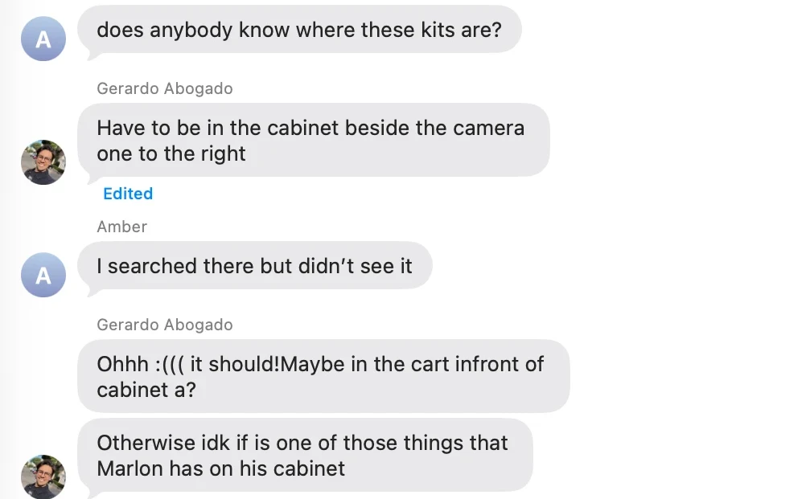
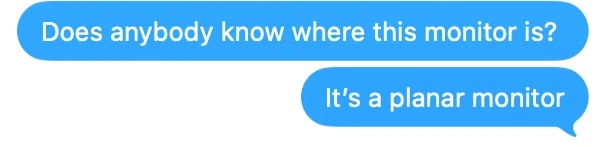
02 · Interviews
Most location information lives in people’s heads
I interviewed five people: two student staff members, the ER manager, someone from the ITP website team, and a staff member who also works at another NYU equipment room.
I wanted to understand how staff learn where things belong, what they do when they can’t find something, and how they keep track when equipment moves.
“There’s pieces of equipment that I still don’t know where they are.”
“I’m so rushed. I’m so anxious... I’m panicking.”
“Last semester I would be very stressed out. And also a little helpless.”
“As an end user, especially people checking things in and out, it’s not very functional. It’s not intuitive.”
“I don’t think there’s a floor mapping.”
03 · Problem
Defining the problem
ER staff don’t have a reliable place to look up where equipment is stored. When nobody on shift knows, they turn to a group chat and wait for an answer. Students may have to wait at the counter or leave without the equipment.
How might we help staff quickly find and put away equipment without relying on memory or waiting for someone who might know?
New staff working alone on an evening shift.
An accurate location they can look up quickly, without having to memorize the room.
04 · Ideas
Narrowing 23 ideas down to five
I grouped 23 ideas into eight categories, then narrowed them down using three constraints: the solution had to work through a website, keep the room’s current arrangement, and require no new hardware.
That ruled out ideas like AR wayfinding, RFID tags, smart cabinets, and kit bags. I kept five to explore: an item location field, a clickable floor plan, photos of storage spots, search by description, and a shared inventory.
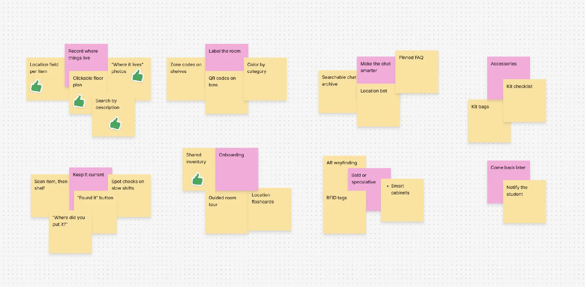
05 · Sketches
Sketching and testing the first version
My Crazy 8s sketches explored three screens: search and map, Return, and People. I developed them into grayscale wireframes in Figma, organized under two tabs: Equipment and People.
I then connected the screens into a prototype with about 40 sample items for testing.
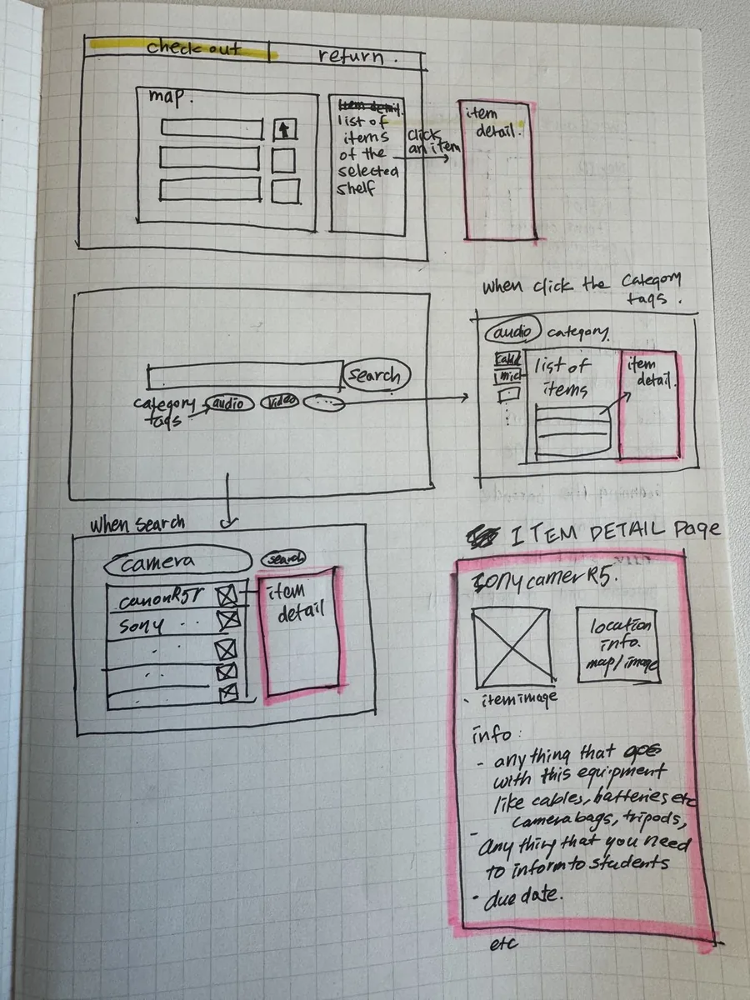
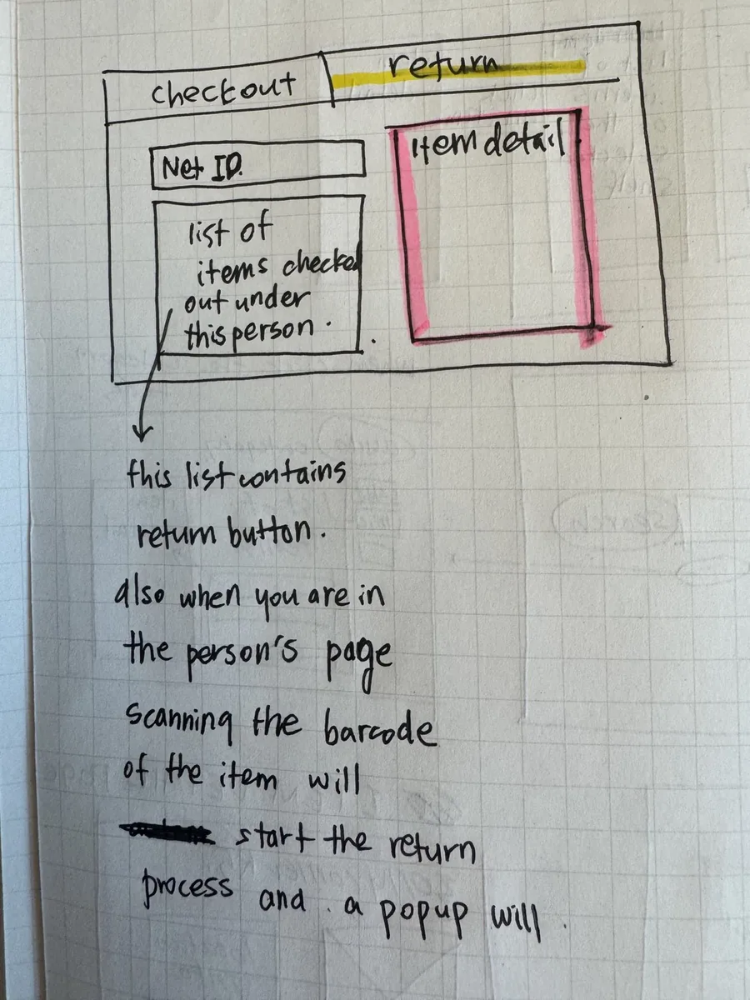
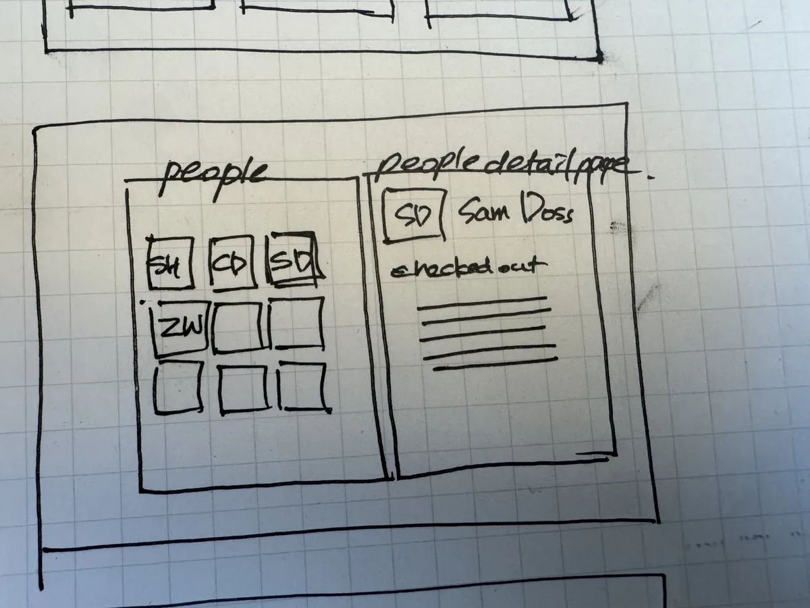
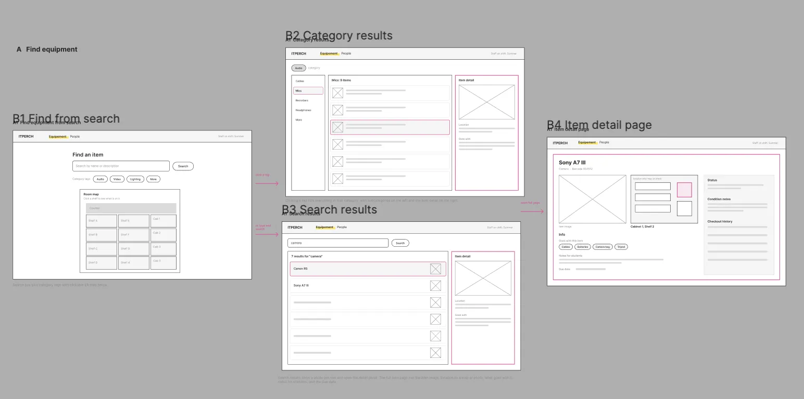
06 · Testing
I was designing for the current system, not for how it should work
I tested the prototype with two new staff members, asking each to complete five tasks. Finding an item took between 9 and 69 seconds. Checkout and return tasks took as long as 114 seconds.
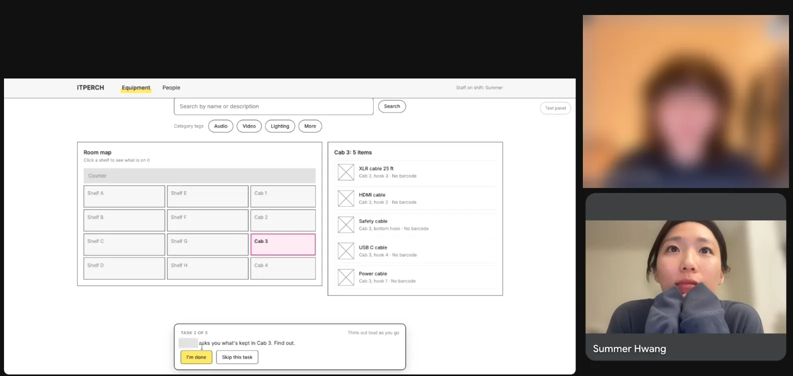
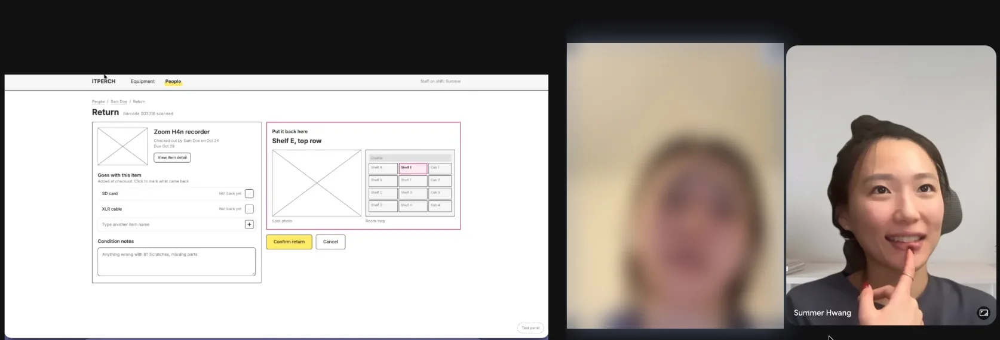
I assumed staff would start a checkout by finding the borrower first because that’s how the current system works. Testing showed I had it wrong: both testers started with the item. I revised the user flow so staff could scan an item from any screen. The system then opens Return or Checkout based on the item’s status.
Return opens
Checkout opens and asks “Who is it for?”
07 · Visual
Building the visual design with real inventory
I used Claude Code to build the prototype with data I had collected while taking inventory as ER staff: about 300 items mapped to their actual shelves, including photos from ITPERCH for about 100 of them.
ITP blue #1E0C99 is the only action color
Adamina for headings, Supreme for body text
Pills and rounded cards
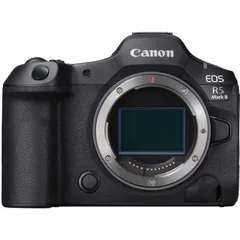
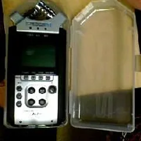
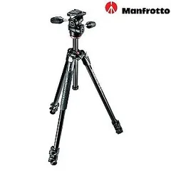
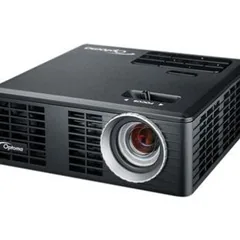
08 · Compare
Adding the information I need at the counter
Equipment home
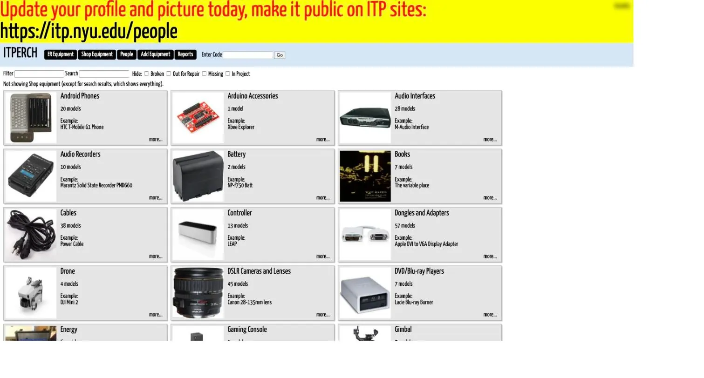
ITPERCH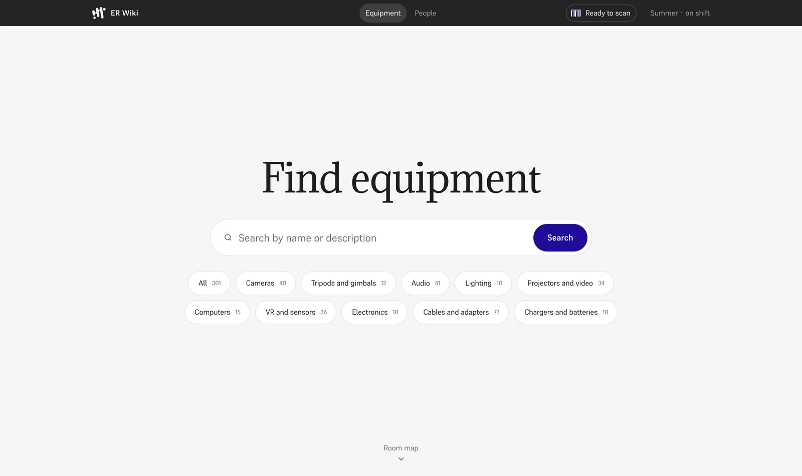
ER WikiA group of equipment
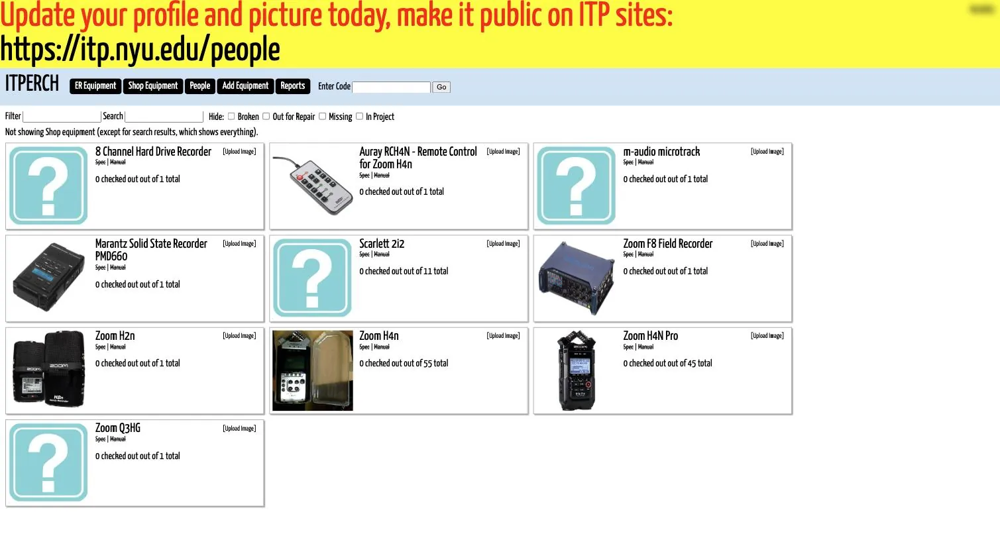
ITPERCH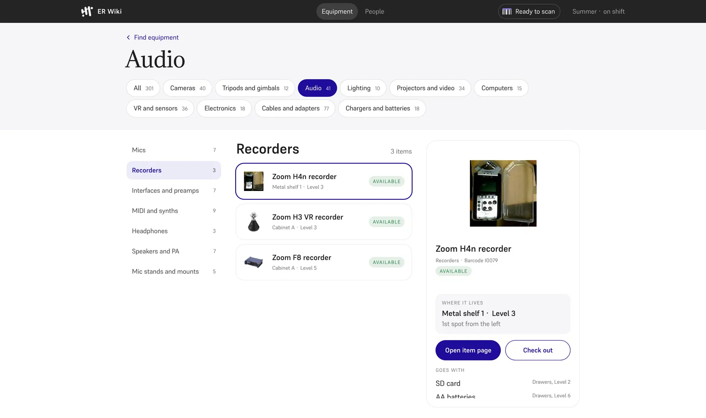
ER WikiItem page
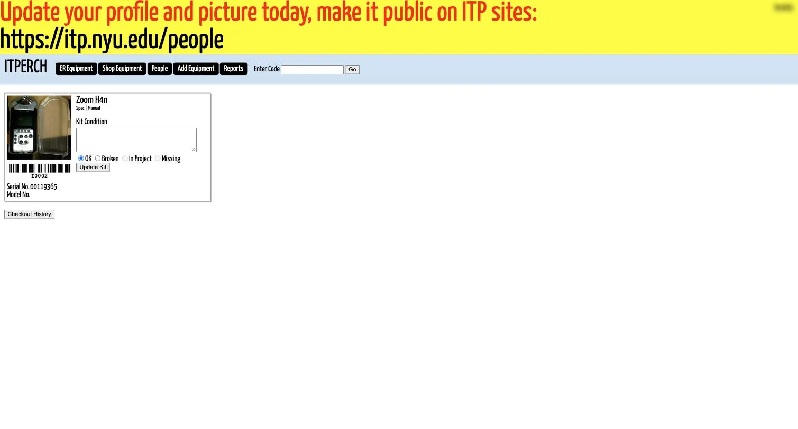
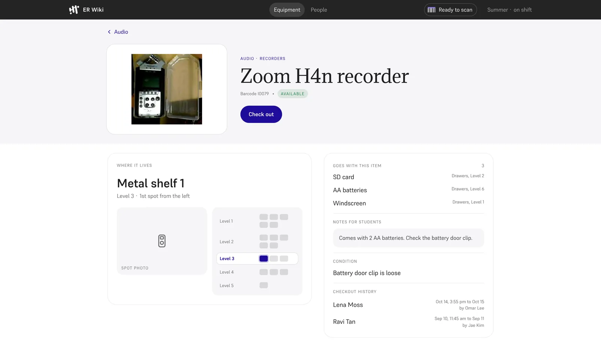
What’s checked out
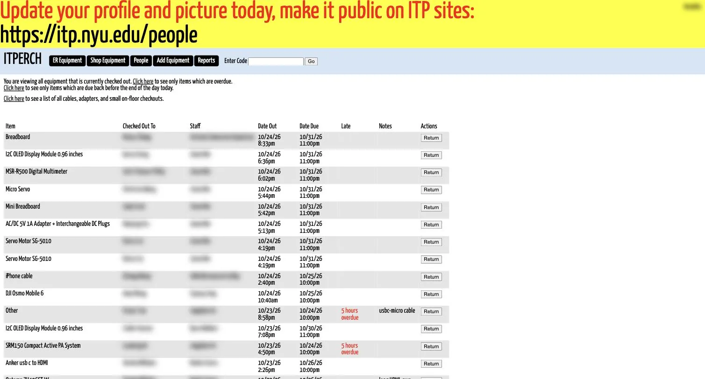
ITPERCH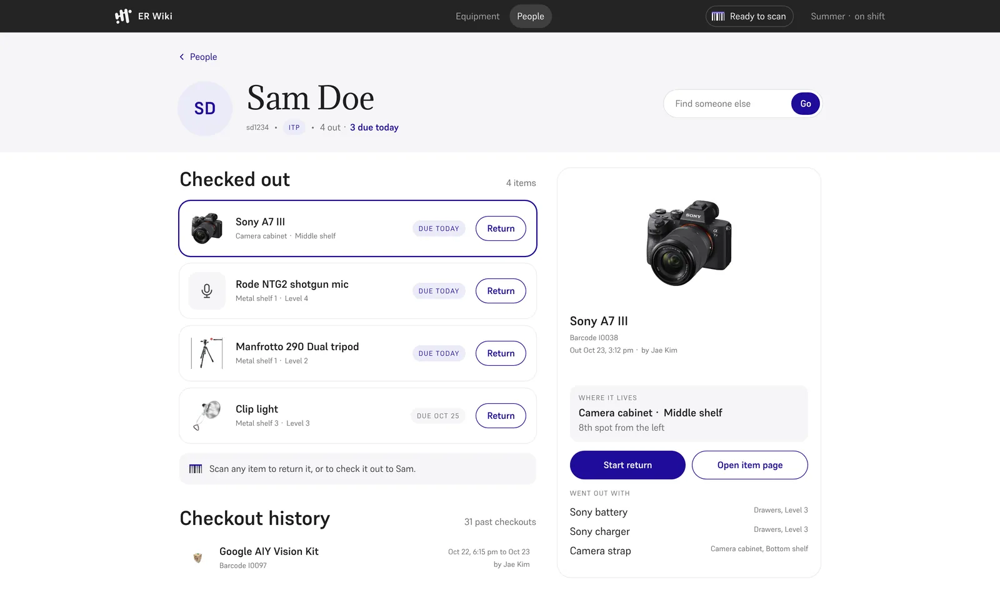
ER Wiki09 · Iteration
Making room for search
I tested the high-fidelity prototype with a staff member who works at the counter every week. He found the equipment home page too crowded, so I gave search its own space at the top. The map sits one scroll below it.
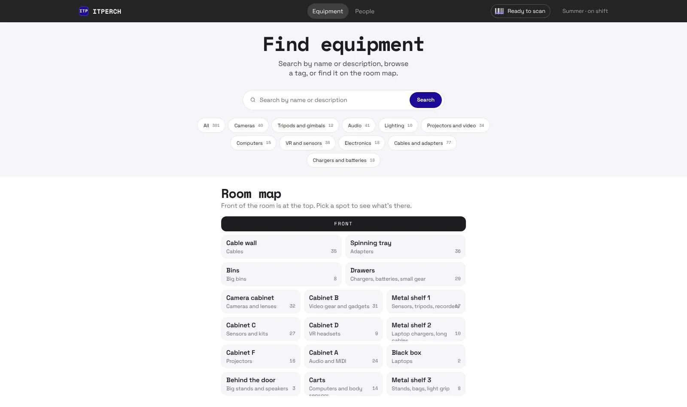
10 · Demo
Find an item and put it back
11 · Scale
Could it work beyond ITP?
I designed ER Wiki for ITP’s equipment room, which serves about 200 students and has nine staff members. But comparing ITP with Clive Davis at NYU and SVA, where I used to work, showed the same gap: all three track locations at the room or aisle level, but none records the specific shelf or storage spot.
| Room | Aisle | Shelf | Exact spot | |
|---|---|---|---|---|
| SVA | Tracked | Tracked | Not tracked | Not tracked |
| ITP | Tracked | Tracked | Not tracked | Not tracked |
| Clive Davis, NYU | Tracked | Tracked | Not tracked | Not tracked |
| ER Wiki | Tracked | Tracked | Tracked | Tracked |
Even Clive Davis, NYU’s music technology department, labels every aisle and does a team inventory every weekend, but still relies on staff knowing exactly where things belong. The staff member who works there said ER Wiki could help with their workflow, too.
Each equipment room could use the same website with its own inventory, floor plan, and storage locations. Clive Davis could be the next place to test it.
12 · Learnings
What I learned
What feels familiar to me isn’t always intuitive to others.
I built the first checkout flow around a process I already knew. Watching new staff use it showed me where that familiarity had shaped my decisions. Their instinct to start with the item helped me simplify the flow.
Look beyond the room I know.
I started with a problem from my own shifts. Comparing equipment rooms helped me see which parts were specific to ITP and which were shared.
I’d refine the visual design and test ER Wiki alongside ITPERCH with ER staff, comparing how long the same checkout tasks take.
I’m planning to meet with the ITP website team to discuss incorporating this work into the ER website.